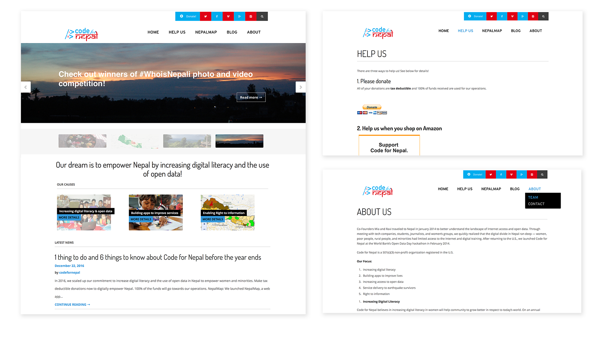

Code for Nepal
Code for Nepal is an organisation that addresses the digital divide and lack of use of open data in Nepal. They're building platforms to increase transparency, accountability, and support media development in Nepal. I'm passionate about their causes and wanted to help them better communicate their them by redesigning their website. All photos were taken by me during a visit to Nepal back in 2014.
Designing for a non-profit
A simple web page with a clear call to action has made nonprofits like Unicef significantly raise their donations. Yet many non-profits still struggle to communicate their causes in a clear way. Code for Nepal is one of them.

Usability problems
I focused the redesign around solving current usability issues. I identified the following: - Lack a strong call to action. - It's unclear what the organization does. - It's hard to perform common user flows such as reading about the causes and making a donation. - The donation form is tricky to fill out. - Scattered visual language.
